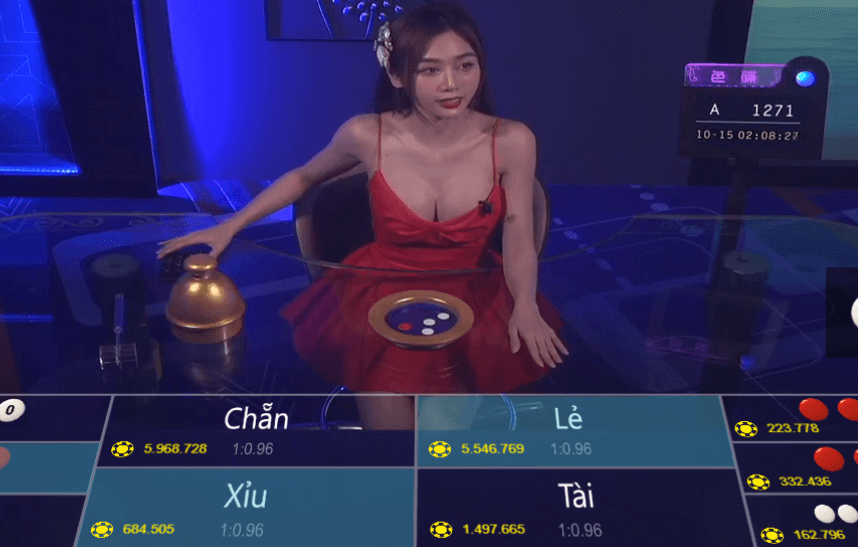
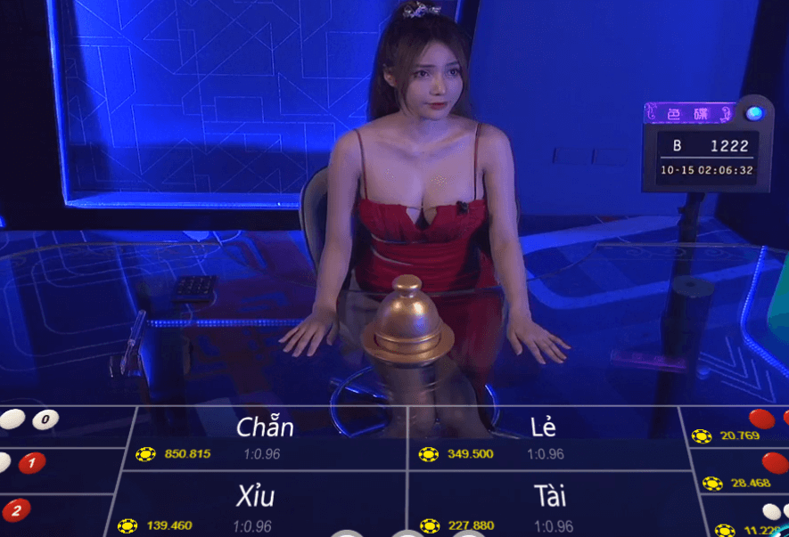
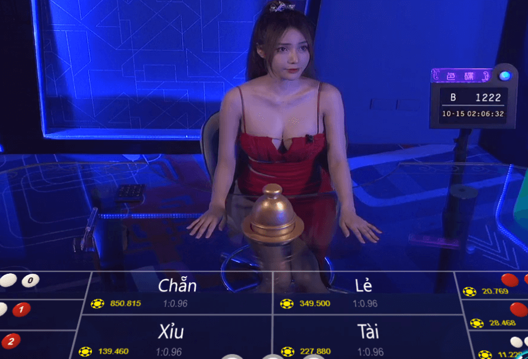
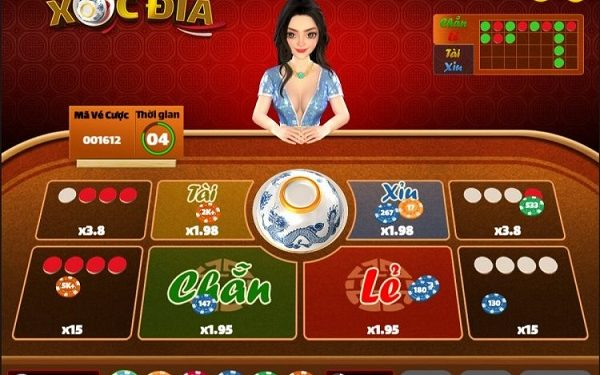
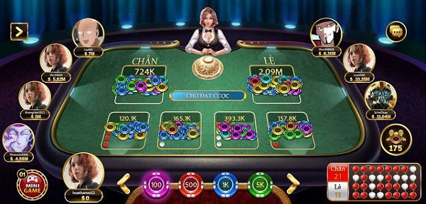
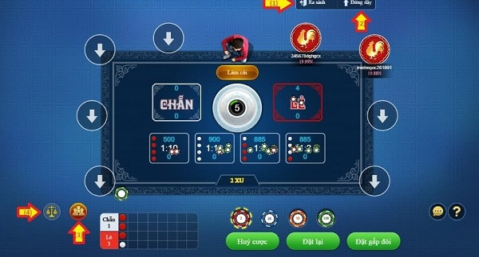
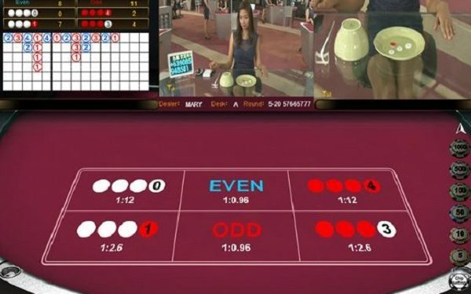
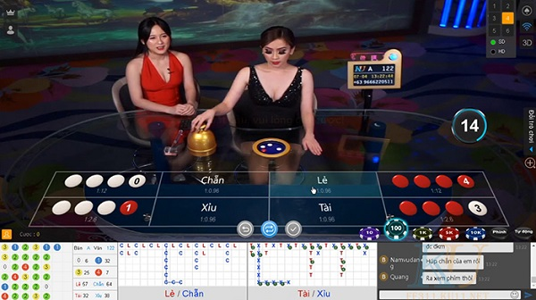
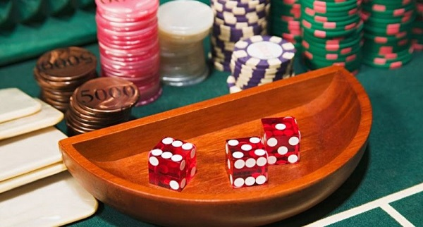
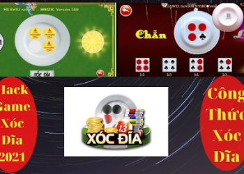

Xóc đĩa Online - Xóc Đĩa Đổi Thưởng Cùng Gái Xinh 2022
Xóc đĩa online trực tuyến uy tín người thật. Hé lộ bí quyết chơi game xóc đĩa đổi thưởng dễ thắng và kiếm tiền khủng từ các lão đại cờ bạc.
Xóc đĩa là gì?
Xóc đĩa được biết đến là một trò chơi dân gian lâu đời được bắt nguồn từ miền Bắc. Trò chơi này được nhiều người yêu thích bởi các luật chơi đơn giản, dễ đánh, kết quả nhanh chóng ngay sau khi chơi. Thông thường một ván xóc đĩa chỉ kéo dài khoảng 10-30s. Vào các dịp lễ, Tết, ngày nghỉ, nhiều người thường chơi trò này để giải trí, thư giãn sau nhiều ngày làm việc căng thẳng.

Game xóc đĩa online
Khi chơi game xóc đĩa cần chuẩn bị một số dụng cụ đơn giản như: đĩa, bát úp, đồng xu. Thông thường người Việt Nam thường dùng bát ngô ( bát con) và một chiếc đĩa loại nhỡ (vừa) để thực hiện.
Ra 4 xu màu đỏ, hoặc 4 màu trắng, hoặc có 2 màu trắng và 2 màu đỏ thì kết quả là CHẴN.
Ra 3 xu màu đỏ và 1 màu trắng, hoặc 3 màu trắng và 1 màu đỏ thì kết quả là LẺ.
Ra cả 4 xu màu đỏ, hoặc có 3 xu màu đỏ và 1 xu màu trắng thì kết quả là TÀI.
Ra cả 4 xu màu trắng, hoặc có 3 xu màu trắng và 1 xu màu đỏ thì kết quả là XỈU.
Nhà cái Kubet sẽ kiểm tra kết quả và so sánh với các người chơi để tìm ra người chiến thắng.  Tỷ lệ ăn tiền Xóc Đĩa Online Trực tuyến là bao nhiêu? Xóc đĩa online có tỷ lệ ăn tùy thuộc vào cửa mà bạn đặt cược. Trong đó cửa 4 xu đỏ, hoặc 4 xu trắng có tỷ lệ ăn cao nhất là 1 ăn 14. Các trường hợp còn lại xem chi tiết bên dưới nhé.
Cách Đánh Xóc Đĩa Online Từ 10 Triệu lên 200 Triệu
Nghe có vẻ ẢO nhỉ? Nhưng anh em không hề đọc lầm đâu. Rất nhiều bạn đã và đang kiếm lúa đều đều vài triệu đến vài chục triệu hàng ngày thông qua nhóm kéo Xóc đĩa Kubet của chúng tôi. Kỹ thuậtđánh xóc đĩa online được các Admin giàu kinh nghiệm đúc kết và chia sẻ Free trong nhóm ZALO KÍN. Hãy xem video dưới đây sẽ rõ.

LINK CHƠI XÓC ĐĨA FB88 - TẶNG NGAY 128K KHI ĐĂNG KÝ MỚI
CHƠI NGAY XÓC ĐĨA NEW88 KHUYẾN MÃI 188K CHO HỘI VIÊN MỚI
Luật Chơi Xóc Đĩa Online trên nhà cái Kubet
Xóc đĩa online Kubet bao gồm các đồ dùng như sau: 1 chiếc bát con hoặc bát tô cỡ vừa, 1 đĩa cỡ vừa và 4 đồng xu có 2 màu trắng và đỏ. Gái xinh có nhiệm vụ làm Dealer xóc đĩa rồi đặt xuống bàn để người chơi tiến hành đặt cược. Khi mở bát úp ra, sẽ có các tình huống xảy ra đối với 4 đồng xu như sau:Ra 4 xu màu đỏ, hoặc 4 màu trắng, hoặc có 2 màu trắng và 2 màu đỏ thì kết quả là CHẴN.
Ra 3 xu màu đỏ và 1 màu trắng, hoặc 3 màu trắng và 1 màu đỏ thì kết quả là LẺ.
Ra cả 4 xu màu đỏ, hoặc có 3 xu màu đỏ và 1 xu màu trắng thì kết quả là TÀI.
Ra cả 4 xu màu trắng, hoặc có 3 xu màu trắng và 1 xu màu đỏ thì kết quả là XỈU.
Nhà cái Kubet sẽ kiểm tra kết quả và so sánh với các người chơi để tìm ra người chiến thắng.  Tỷ lệ ăn tiền Xóc Đĩa Online Trực tuyến là bao nhiêu? Xóc đĩa online có tỷ lệ ăn tùy thuộc vào cửa mà bạn đặt cược. Trong đó cửa 4 xu đỏ, hoặc 4 xu trắng có tỷ lệ ăn cao nhất là 1 ăn 14. Các trường hợp còn lại xem chi tiết bên dưới nhé.
Cách cược
4 xu đỏ
4 xu trắng
3 xu đỏ và 1 xu trắng
3 xu trắng và 1 xu đỏ
2 xu trắng và 2 xu đỏ
4 xu trắng hoặc 4 xu đỏ
Chẵn 4 đỏ / 4 trắng / 2 trắng và 2 đỏ
Lẻ 3 đỏ và 1 trắng / 3 trắng và 1 đỏ
Tài 4 đỏ / 3 đỏ và 1 trắng
Xỉu 4 trắng / 3 trắng và 1 đỏ
Tỷ lệ ăn tiền
1 ăn 14
1 ăn 14
1 ăn 2.8
1 ăn 2.8
1 ăn 1.5
1 ăn 6.5
1 ăn 0.96
1 ăn 0.96
1 ăn 0.96
1 ăn 0.96
VÀO NHÓM KÉO XÓC ĐĨA NGAY
Kiếm vài triệu mỗi ngày dễ dàng
Cách Chơi Xóc Đĩa Luôn Thắng Đơn Giản
Đối với nhiều người thường cho rằng kết quả trong Xóc đĩa online là do may rủi. Tuy nhiên, không hẳn là như vậy. Các cao thủ GameNoob đã chia sẻ nhiều cách chơi xóc đĩa luôn thắng để bạn có thể tìm hiểu.
Chơi xóc đĩa theo kiểu gấp thếp
Có 1 quy luật được rất nhiều cao thủ áp dụng và đã giành được chiến thắng đó là đánh theo lối gấp thếp. Tuy nhiên, để thực hiện được phương thức này thì bạn phải chuẩn bị một nguồn vốn nhiều trong tay. Đầu tiên bạn nên cho mình một cửa nhất định và đặt tiền vào đó. Nếu thua, bạn hãy nhân đôi số tiền và đặt tiếp tục vào chính cửa đó. Cứ tiếp tục bạn đặt số tiền nhân đôi vào những ván sau cho đến khi thắng thì thôi. Khi bạn đã thắng thì nên quay lại đặt số tiền cược ban đầu. Sau đó ta lại áp dụng những phương thức cũ. Chắc chắn bạn sẽ không bao giờ bị lỗ vốn nếu trong 1 ngày may mắn. Nhưng ngày hôm đó đen đủi thì bạn sẽ không thể áp dụng phương thức này thành công. Nếu bạn không đảm bảo được một số vốn nhiều thì việc này giống như 1 con dao hai lưỡi. Đây là một kinh nghiệm đánh xóc đĩa xương máu mà các tay chơi lão luyện đúc kết lại.

Áp dụng phương pháp gấp thếp nêu bạn có nhiều vốn trong tay
Biết dừng đúng lúc khi chơi xóc đĩa
Biết dừng đúng lúc là một yếu tố quan trọng mà không phải bất cứ ai cũng áp dụng được. Dù kết quả của những ván chơi có thắng hay thua thì bạn cũng nên biết dừng thời điểm nào là chính xác. Nếu bạn đang thua thì có lẽ hôm đó bạn không may mắn. Bạn không nên cố gắng gỡ gạc và cay cú để tiền thua thêm nhiều hơn. Thay vào đó bạn nên dừng lại rời khỏi bàn hoặc tìm một bàn mới để cắt đứt dây xui xẻo. Trong trường hợp bạn đang thắng trong nhiều ván liền. Bạn không nên quá ham vui mà đặt nhiều hơn. Đã có rất nhiều người phải trả giá cho sự bồng bột của mình. Do đó, khi thắng được một số tiền vừa đủ thì bạn nên dừng lại. Đây không phải là hèn hạ mà đây là thủ thuật trong khi chơi xóc đĩa.

Bạn nên đặt ra cho mình những quy định về dừng khi thắng thua rõ ràng
Đánh xóc đĩa theo người đang thắng
Nếu trong quá trình chơi, bạn để ý thấy có một người chơi cùng luôn giành được nhiều chiến thắng. Hay ai là cao thủ trong các kỹ thuật đánh xóc đĩa. Bạn hãy theo những hình thức đặt của họ để gỡ lại số tiền vừa bị thua. Bên cạnh đó, cũng có rất nhiều chơi không có kinh nghiệm đánh nhưng vẫn dành chiến thắng. Có thể là do họ đang có thần may mắn phù hộ. Bạn có thể đánh theo những cửa của họ. Cách đánh này không cần bạn phải có kỹ thuật nhưng lại đem thắng lợi về.

Nếu quan sát thấy có một người hay chiến thắng thi hãy đặt theo người đó
Bình tĩnh quan sát đối phương
Các cao thủ Xóc đĩa online đã chỉ ra kỹ thuật cao siêu khi đánh xóc đĩa đó là giữ tâm lí bình tĩnh để quan sát đối phương. Đồng thời, bạn có thể dựa vào kết quả của những ván trước để thống kê các kết quả chẵn-lẻ. Từ đó đưa ra cho bản thân những phán đoán chính xác nhất. Bạn hãy chơi chậm lại, suy nghĩ thật kỹ. Không nên quá nóng vội để có những bước đi sai lầm. Để phòng ngừa 1 số chiêu trò lừa đảo trong khi đánh bài thì bạn cũng nên tìm hiểu một số cách bịp xóc đĩa mà dân trong nghề hay sử dụng. “Hãy cẩn thận”.
Đặt cược theo quy luật của xóc đĩa hên xui
Nếu bạn đã nắm được tất cả những kinh nghiệm trên đây thì bạn nên áp dụng quy luật hên xui. Bởi đánh bài may rủi là điều tất nhiên. Nếu bạn có thể kết hợp tất cả những phương pháp trên với phương thức này thì bạn như hổ mọc thêm cánh vậy.

Khi đánh bài nên đặt cược theo quy luật hên xui
VÀO NHÓM KÉO XÓC ĐĨA NGAY
Cao thủ kéo xóc đĩa tỷ lệ thắng 89%
Biết quản lí tiền vốn rõ ràng cụ thể
Đây là một trong những yếu tố quan trọng mà bạn cần phải nắm vững mỗi khi muốn tham gia vào Game Xóc đĩa online. Bởi một khi đã bước vào cuộc chơi đồng tiền có sức mạnh rất lớn trong việc chi phối con người bạn. Tiền cược sẽ làm bạn bị lu mờ ý chí và không thể suy nghĩ được minh mẫn. Đặc biệt đối với những người chơi có máu sát phạt thì việc này lại càng cần thiết hơn nữa. Bạn phải rèn luyện cho mình có tính kiểm soát và tiết chế được tinh thần của bản thân. Dù kết quả có ra sao, có thắng hay thua nhiều thì bạn cũng nên biết dừng đúng lúc. Tránh tình trạng đặt tiền quá nhiều rồi thua lỗ nặng nề. Tuy nhiên, bạn cũng không nên đặt quá nhỏ để tránh mất thời gian. Ngay từ ban đầu bạn phải định ra cho mình một mức cược phù hợp với số tiền vốn đang có. Phải biết đầu tư lý tưởng thì mới có những gặt hái thành công cho bản thân.
Quản lí tiền vốn rõ ràng cụ thể sẽ giúp bạn làm chủ được tài chính của mình
Quan sát kĩ lưỡng các kết quả trước đó
Việc theo dõi kết quả của các ván xóc đĩa trước cũng sẽ giúp ích bạn rất nhiều để giành chiến thắng. Đối với bất kì trò chơi nào bạn cũng nên chuẩn bị cho bản thân được sự đầu tư kĩ lưỡng. Tuy nhiên chúng chỉ mang tính chất tương đối. Nhưng nếu chúng ta có thể bỏ thời gian để nghiên cứu và suy ngẫm. Bạn sẽ dễ dàng tìm ra quy luật và có thể phán đoán kết quả sắp tới chính xác nhất. Cũng như những trò chơi khác, lô đề thì cần phải soi cầu, Bóng đá thì phải soi kèo.... Thì đối với trò xóc đĩa này cũng vậy. Bạn cũng cần bỏ thời gian ra để quan sát soi cầu xóc đĩa. Bạn không nên xem thường cách chơi này nhé.

Quan sát kĩ lưỡng các kết quả trước đó sẽ giúp bạn giành phần thắng nhiều hơn
Nhận định rõ may rủi trong khi chơi
Bên cạnh những kinh nghiệm để chơi xóc đĩa luôn thắng. Thì yếu tố may rủi cũng rất quan trọng. Nếu hôm đó bạn nhận ra mình đang trong dây đen, bạn không nên mất bình tĩnh. Mà nên dừng cuộc chơi ngay lúc này. Để có thể lấy lại được những gì ngày hôm nay đã mất thì bạn nên đợi tới hôm sau. Dù kết quả có như nào thắng hay thua thì bạn cũng nên ổn định tâm lí của chính mình. Trong trường hợp bạn thấy hôm đó mình trúng dây đỏ, thắng liên tục các ván chơi liền. Thì bạn nên tăng thêm cơ hội cho mình, tăng cược để có được lợi nhuận nhiều hơn nữa. Nhưng dù bạn có tăng tiền cược thì cũng không nên tăng quá nhiều, vẫn phải chừa lại tiền lời của mình. Nếu hôm nay bạn chơi cá cược nhưng cảm thấy cơ thể mệt mỏi, tâm lí không ổn định. Thì bạn cũng không nên chơi, tránh làm ảnh hưởng đến kết quả cá cược.

Nếu hôm đó bạn nhận ra mình đang trong dây đen thì bạn nên dừng cuộc chơi
Tất cả những cách chơi xóc đĩa luôn thắng trên đây được tập hợp từ rất nhiều cao thủ xóc đĩa dày dặn kinh nghiệm thực chiến. Bạn hãy rèn luyện cho mình một trí tuệ minh mẫn để sử dụng các kỹ thuật chính xác. Nếu áp dụng nhuần nhuyễn cùng với sự may mắn chắc chắn bạn sẽ đánh đâu thắng đó. Chúc bạn sẽ giành được nhiều chiến lợi phẩm khi chơi game xóc đĩa online nhé.
LINK CHƠI XÓC ĐĨA TÀI XỈU FB88
KHUYẾN MÃI 128K CHO HỘI VIÊN MỚI

GAME BÀI
Công thức game xóc đĩa thắng lớn của các cao thủ sòng bài
BY GAMENOOB OCTOBER 24, 2022
GAME BÀI
Xóc đĩa mạng có bịp không? Cách nhận biết xóc đĩa bịp
BY GAMENOOB OCTOBER 24, 2022
GAME BÀI
Cách soi cầu xóc đĩa cực đơn giản mà cao thủ thường dùng
BY GAMENOOB OCTOBER 24, 2022
GAME BÀI
Cách đánh xóc đĩa xanh chín theo kinh nghiệm thực tế
BY GAMENOOB OCTOBER 24, 2022
GAME BÀI
Cách đọc vị xóc đĩa đơn giản, chuẩn xác nhất
BY GAMENOOB OCTOBER 24, 2022